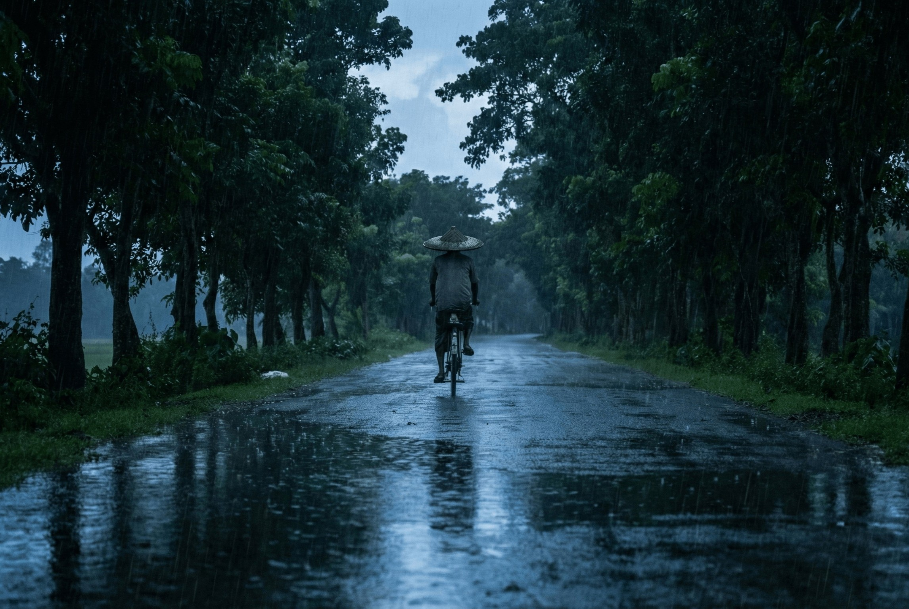

A Winter Morning
"A car ride through a foggy morning in winter, where you stare at the rising sun from the rear corner..."
Ahmad Al-Imtiaz | Prospective Graduate Student
"A car ride through a foggy morning in winter, where you stare at the rising sun from the rear corner..."
Email: ahmadal.imtiaz@gmail.com